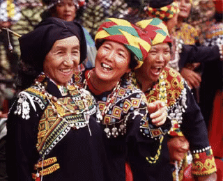
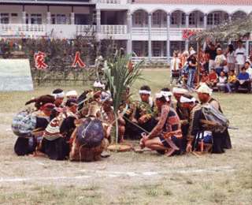
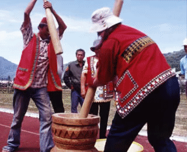
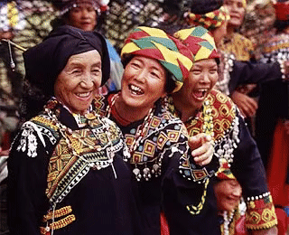

布農族是典型的高山民族，以氏族家庭為中心，為嚴格的父系社會，年齡最長的男子有無上權力，非常重視長幼有序的倫常關係。

布農族現約有四萬三千人，其傳統生活領域涵蓋臺灣中部及東南部中央山脈兩側海拔一千五百公尺，甚至高達三千公尺的高地上，是臺灣南島語族中典型的高山民族。布農族人目前主要住在南投仁愛、信義：花蓮縣卓溪、萬榮；臺東縣海端、延平以及高雄縣三民、桃源等鄉。學者把布農族分為以下幾個亞群，除了因與他族融合幾乎消失的蘭社群之外，尚包括：北布農的卓社群與卡社群；中布農的巒社群與丹社群；以及南布農的郡社群等五群。布農族社會以氏族家庭為中心，形成散居部落形態。布農族傳統上為嚴格的父系社會，具有父系繼承、從父居、大家族制等特色。他們是臺灣南島語族中唯一實行大家族制的民族。在二、三十人同居共食、同工並享的大家庭中，年齡最長的男子有無上的權力，因此布農族人非常重視長幼有序的倫常關係。
布農族以小米及狩獵為中心，發展出許多相關的祭儀，在與小米有關的農業祭儀中，族人皆會吟誦小米豐收歌，打耳祭則是一年之中最重要的祭典。

布農族傳統生計以山田種植小米為主，狩獵為輔，因此族人以小米及狩獵為中心，發展出許多相關祭儀。再臺灣原住民中獨樹一幟的是族人發展出獨特的曆法（有繪曆與結繩兩種），以祭團為單位，根據小米種植的節期，形成年中祭儀之循環。根據統計，一年之中有關農業祭儀的日期，超過五十天以上，過去光是小米播種祭（lus-an
mi-pi-nag）就歷時將近一個月。舉凡與小米有關的農業祭儀，如開墾祭、播種祭、除草祭、收穫祭與新年祭等，族人皆會吟誦小米豐收歌（pasi-put-put），以向天神
dihanin
祈求賜福人間。族人們相信，歌唱的好壞，與那年小米收穫的豐欠有直接關係，因此包括唱歌的人數（只限品德優良、過去一年平安幸福的成年男子十至十二人，且必須要是偶數）、唱歌的過程皆有許多禁忌。
小米相關的祭儀之外，打耳祭（ma-na-dan-yan）是布農族一年中最重要的祭典，也是歲時祭儀中唯一與打獵相關之儀禮。其目的為祈求狩獵豐收，並將獵人的文化傳承給下一代的布農勇士。下表為打耳祭中歌舞的形式：
| 歌名 |
譯名 |
參加人員
性別 |
舞蹈形式 |
| Matilumah |
收工返家歌 |
男女均有 |
不確定 |
| Pasiputput |
小米豐收歌 |
唯獨男子 |
圍成封閉圓緩慢移動 |
| Pislaj |
祈禱打獵歌 |
唯獨男子 |
無，但男領唱者在半圓中邊打芒草邊唱 |
| Pishaimu |
祭人頭歌 |
唯獨男子 |
無，圍半圈、團體唱歌 |
| Malastapang |
報戰功 |
男女均有 |
男子圍坐內圈、女子外圈拍手換邊跳躍 |
| misav kahudas |
飲酒歌 |
男女均有 |
男子圍坐內圈、女子外圈拍手換邊跳躍 |
| Pissaidad |
感懷歌 |
男女均有 |
無，女領唱者在半圓中邊打芒草邊唱 |
| Malkakiv |
童謠 |
男女均有 |
無，男女同圍圓唱 |
| ai … e |
散會歌 |
男女均有 |
|
資料來源：《臺灣土著祭儀及歌舞民俗活動之研究續篇》，P. 181，1989
打耳祭樂舞 (高雄縣三民鄉)
打耳祭是布農族一年中最重要的祭典，目的是為了祈求狩獵豐收，並將獵人的文化傳承給下一代的布農勇士。
布農族非常重視祭儀，祭儀音樂的種類特別豐富，其中「祈禱小米豐收歌」是布農族最著名的歌謠。

布農族的音樂
布農族的音階，在基本上，是由自然泛音所組成的
do、mi、sol、do。通常以兩部合唱來唱。這種音階與口琴、弓琴所發出的汎音是一致的。布農族非常重視祭儀生活，因此祭儀音樂之種類特別豐富。例如「祈禱小米豐歌歌」、「播種之歌」、「收獲之歌」、「獵前祭歌」、「打耳祭歌」、「獵獲凱旋歌」、「作戰凱旋歌」、「驅邪歌」、「新年之歌」等。布農族以「祈禱小米豐收歌」pasi-put-put
著稱於世，是一種二部（或三部）的合唱，其中一部是由低音約每半音漸次上升，其他二部是以協和音形成和音。
布農族在演唱方面是有性別限制的，例如祈禱小米豐收歌 pasi-put-put
是專屬成年男子的祭儀歌曲，狩獵性祭儀歌謠則以成年男子負責領唱，女性只允許在和唱時出現，其他歌曲就無性別上之嚴格限制。不像其他族群的祭典歌曲，打耳祭中吟唱的部分歌謠，其他場合也可以唱，領唱者者男女皆可，但是小米豐收歌除外。
布農族童謠數量非常多，其歌詞大都固定不變。值得注意的是，布農族沒有情歌的名稱。其演唱形式有獨唱（如「採地瓜葉之歌」）、合唱、重唱（如「背負重物之歌」）、朗誦式領唱和唱（如「寂寞之歌」）、呼喊式唱法。其音階概念基本上是由四個聲部衍生，即最低音聲部的「madaingan」、中音聲部的「lamai
dudu」（或稱 mabonbon）、高聲部的「mahosngas」、及次高聲部的「mandala」。
按聲部分好後，進行演唱，由領唱者自低音起音，然後以接近半音的音程徐徐上昇。其他二組或三組聲部則在領唱者唱出低音後，依次以大三度、小三度、完全四度、完全五度及完全八度的協和音程加入，並也依領唱者的低音一樣徐徐上昇，等到領唱者的聲域達到最高點時，成員會以眼神暗示一齊停止演唱。歌唱時間視領唱者之能耐及成員之間的默契而定。
布農族的樂器
從許多文獻的記載中，在日據時代依然可以看到布農族使用的樂器約有十來種。例如：弓琴、口簧琴、木杵、臼（木製）、竹琴、鼻笛、五弦琴……等等。光復以後至目前尚在流傳、比較常見的樂器則有下列幾類：
體鳴樂器
口簧琴（pis-hon-hon）：
靠扯動琴臺的繫繩引起簧片振動，藉口腔共鳴並隨著頰、唇、齒、舌的位置變化，以及控制輕、重、緩、急的氣息，便可以隨演奏者心緒發出不同的音響。
木杵（ma-dodol）：
藉著木質長短、粗細不一的棒、杵，撞擊地面上的石板而發出不同顏率的聲音。一般多為 6-10 人的合奏，但只樂而不歌。
絃鳴樂器
弓琴（la-dol）：
在長約 60
公分的弓柱上，架上一鐵絲絃（以前曾用月桃纖維、麻、藤製絃），琴首含於口中藉其共鳴作用，左手執琴身下端（弓置於大姆指與指之間），以拇指調節絃的振動、同時壓弦或離開以改變音高，右手再以姆指與指彈絃。（吳榮順：
1993，P. 46）
五弦琴（dol-dol; bo-lin-kav）：
這也是臺灣原住民族弓琴之外，僅有的絃鳴樂器。主要流傳於卡社群，在巒社群發現的則為四絃琴。其構造是取一平面木板，於其一端將五枚鐵釘成排固定，另一端設五個琴軫以方便調整琴絃張力，可以達到調音的效果。演奏時琴上方放置鐵桶以增加共鳴，演奏者蹲在琴弦的一端，以兩支削尖的竹枝挑動琴弦；也有以左手持琴用右手手指挑出聲。
布農族對樂器的認知與命名方式，多係以該樂器發出的聲音「hon-hon」之前加上「pis」（拉動、抽動的意思）；形成「pis-hon-hon」；就是指拉動「pis」會發出「hon-hon」聲響的東西，也就是指口簧琴。這種在擬聲單詞前面綴飾動詞謂語的方式，符合布農語聯結（v-s-o）的語法結構，充分顯示布農族對樂器的概念，係來自語言的架構。
小米豐收歌 (高雄縣三民鄉)
布農族以祈禱小米豐收歌著稱於世，它是專屬成年男子的祭儀歌曲，為二部（或三部）的合唱，其中一部是由低音約每半音漸次上升，其他二部是以協和音形成和音。
據說，布農族原本沒有舞蹈概念，有時在打耳祭中，可以看到輕微的形式化動作。

許多人認為布農族語言中並沒有「舞蹈」一詞或與之相當的語彙。據聞，族人們看到別的族群「跳舞」甚至會覺得彆扭。但是打耳祭中，有時可以看到族人們輕微的形式化動作，稱之為
pasilaiti。根據南投縣信義鄉一帶的布農族人的說法，族人原本是沒有「舞蹈」的概念，除了「小米豐收歌」中男性圍圈緩慢移動的動作之外，現今「報戰功」中女性拍手跳躍的動作，是早期前來採集原住民舞蹈的漢人舞蹈家加以修飾編整而成。
但是布農族研究者田哲益（2002，P.
115）曾指出，卡社群的布農族人曾有唱跳獵首舞的紀錄：男子站立中間、女子重重圍在外圈拍手轉圈跳躍而舞，若有獵首，則以敵首代替中間的男子，眾人圍著敵首跳舞；而在卓社群（南投縣信義鄉中正村），稱女性跳舞為「瑪蓮給」（marenke）；男性跳舞為「敏達棒」（mintapang），是一種雙人相對拍手跳躍之舞。卓社群並將舞蹈分為酒舞與祭舞，後者為一種集體舞蹈，男女成一字形或圓形，隨歌而舞。
究竟布農族原本就無「舞蹈」的概念，或如研究者所說因為遷移頻繁而舞蹈文化未能發展？是一值得探究的問題。
打耳祭-誇功歌 (高雄縣三民鄉)
誇功歌是在打耳祭過程中，由一人以誇大的動作唱歌，其餘人則在旁附和。